Lataus on ilmainen. Tilaus sovelluksen sisällä.
Applen nostama · ★ 4,2 App Storessa
Parhaat sovellukset
iPadOS:lle
Sovellukset,
joista pidämme
Indie-
suosikkimme
Valitse viikon ruokalista, muokkaa sitä tai tee oma alusta asti. Säästä aikaa ja rahaa ja syö terveellisemmin.
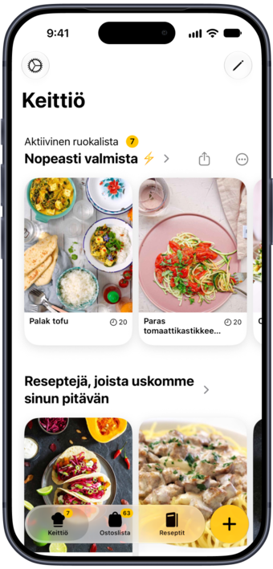
Muuta mikä tahansa verkkoresepti tai Instagramin ja TikTokin ruokavideo kunnon reseptiksi. Lisää omasi tai muokkaa meidän reseptejämme.
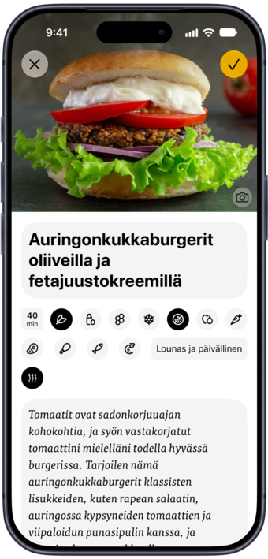
Kaikki tarvitsemasi ainekset kerätään automaattisesti ja järjestetään kaupan osastojen mukaan, ja jokaisella on oma kuvituksensa.
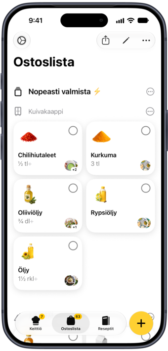
Selaa valmiita, teeman ympärille koottuja viikon ruokalistoja ja vaihda tilalle mitä ikinä tekee mieli kokata.
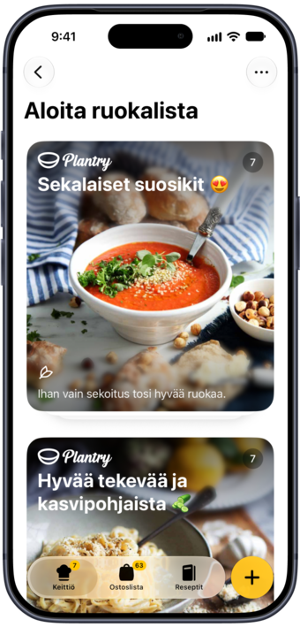
Plantrysta löydät yli 1 200 herkullista reseptiä mahtavilta kokeiltamme.
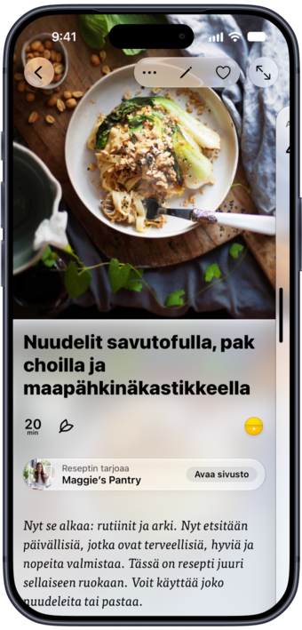
Lisää, mitä kaapista löytyy, tai kuvaa jääkaappisi, niin saat reseptit järjestettynä sen mukaan, kuinka paljon tähteistä ne käyttävät.
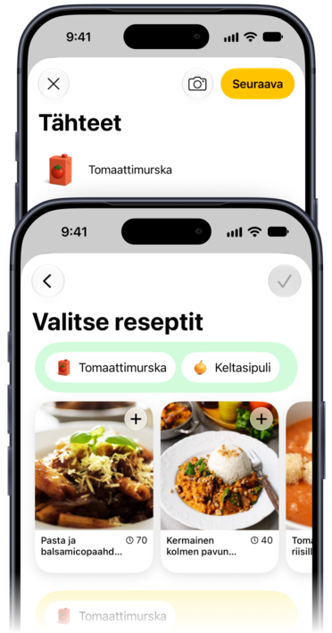
Lisää viikon ruokalista tai ostoslista lukitusnäytölle tai Koti-valikkoon. Yksi napautus, ja olet valmis kokkaamaan tai lähtemään kauppaan.
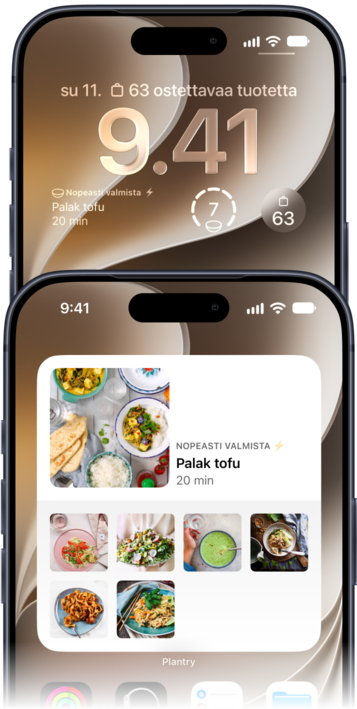
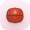
Käynnistä useita ajastimia suoraan mistä tahansa reseptistä. Napauta ohjeen aikaa tai aseta oma.
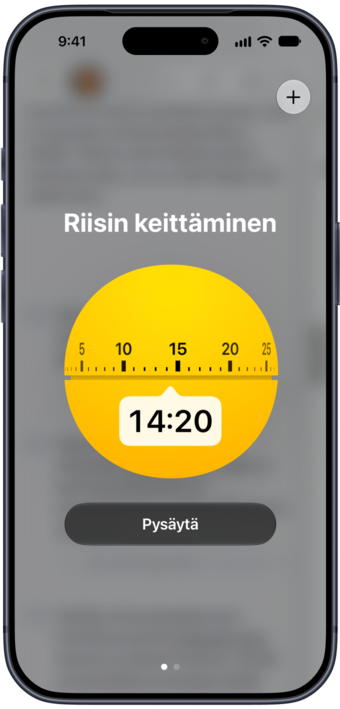
Valitse teemaväri ja ainesten asettelu, ja anna jokaisen reseptin ottaa värinsä omasta kuvastaan.
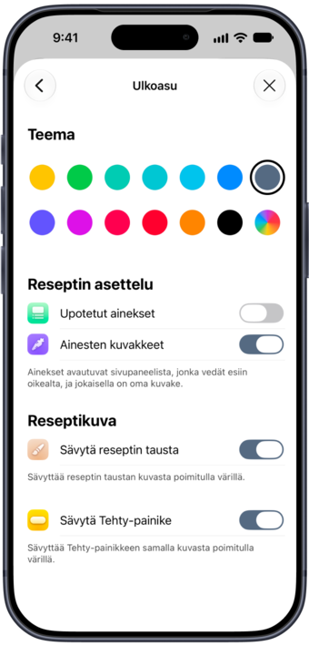
Avaa se suurta näyttöä varten. Taita se, kun resepti on auki, niin kokkaustila ottaa ohjat.
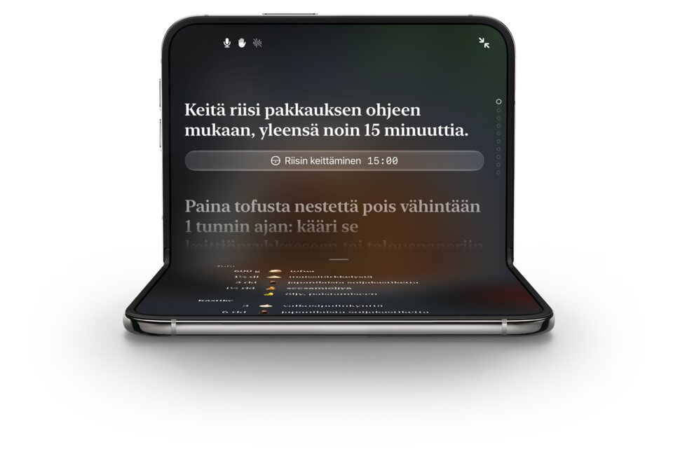
Heidän reseptinsä sopivat täydellisesti perheen arkeen – hyvää ja maukasta ruokaa silloinkin, kun aikaa on vähän.
Gustav opettaa, miten kasvipohjaisista raaka-aineista saa irti oikean rakenteen ja eniten makua.
Kokkaa heidän herkullisia, tulehdusta hillitseviä reseptejään ja tee pieniä muutoksia, joilla on iso merkitys.
Kasvisruokaa, jossa sesongin raaka-aineet ovat pääosassa.
Helppoa, kasvipohjaista ja maukasta ruokaa koko perheelle!
Syyrian, Libanonin ja Unkarin keittiöistä innoituksensa saava Selina luo jännittäviä kasvisreseptejä.
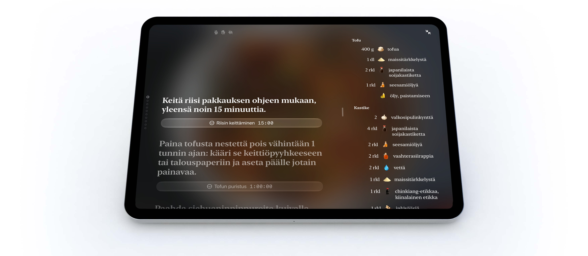
Parhaat sovellukset
iPadOS:lle
Sovellukset, joista
pidämme nyt
Opettele uusi
resepti
Pakkohankinta
Kyllä, sinä osaat kokata!
Sovelluksia
kestävään elämään
Vahvista
vastustuskykyäsi
Indie-
suosikkimme
Hyödyllisiä sovelluksia
arkeen
Viikon suosikki
Löydä uudet
lempireseptisi
Tehty niin suurella rakkaudella! Tämä on yksi niistä sovelluksista, joiden jokaisesta nurkasta huomaa, miten huolella ne on tehty. Jos tykkäät kokata ja suunnitella ruokia, tee elämästäsi vähän parempaa ja ota Plantry käyttöön. Tilauksen hinta on pieni verrattuna siihen, miten laadukkaan kokemuksen se tarjoaa.
Mahtavaa ruokaa, suunnittelua, elämä helpommaksi. Olen käyttänyt Plantrya yli kuukauden ja jatkan ehdottomasti. Viikon ruokalistan suunnittelu ja siihen kuuluva ostoslista ovat tosi upeita ja helppokäyttöisiä. Reseptit ovat todella hyviä ja helppoja seurata, ja ruoka on mahtavaa.
Terveellistä syömistä helposti! Rakastan tätä sovellusta! On tosi vaikeaa saada terveellinen syöminen mahtumaan kiireiseen arkeen, koska minulla ei ole koskaan aikaa etsiä reseptejä. Tämä sovellus on ratkaisu! […] Ihanaa lähteä töistä ja odottaa, että pääsee tekemään uuden, herkullisen ja terveellisen päivällisen!
Loistava sovellus, mahtavaa ruokaa. Olen tehnyt tähän mennessä kuusi ruokaa, ja ne ovat olleet tosi maukkaita ja herkullisia. Itse sovellus on upea ja selkeästi rakennettu.
Plantry on ruokalista- ja ostoslistasovellus iPhonelle ja iPadille, joka vie sinulta iltaisen ”mitä tänään syötäisiin?” -pohdinnan. Valitse valmis viikon ruokalista, muokkaa sitä tai rakenna oma alusta asti, niin Plantry kirjoittaa ostoslistan puolestasi sekunneissa. Suunnitellessasi se ehdottaa reseptejä, jotka sopivat jo valitsemiesi ruokien kanssa.
Jokainen julkaisemamme resepti on kasvipohjainen: yli 1 200 kasvis- ja vegaanista päivällistä kokkiemme tekeminä, nopeista arkiruoista viikonlopun suosikkeihin. Tallenna verkosta löytämäsi reseptit samaan kokoelmaan, pidä viikon ruokalista ja ostoslista widgettien avulla lukitusnäytöllä tai Koti-valikossa ja kokkaa ajastimilla, jotka on rakennettu suoraan jokaiseen reseptiin.
Puoli jääkaapillista käytettävää? Kirjoita, mitä sinulla on, tai ota pari kuvaa jääkaapistasi, niin uusi Tähteet-toiminto järjestää reseptit sen mukaan, kuinka paljon niistä ne käyttävät. Ostoslista järjestyy itse kaupan osastoihin siinä järjestyksessä, jossa oikeasti kuljet kaupassa, antaa jokaiselle ainekselle oman kuvitetun kuvakkeen ja tulostuu yhtä kauniisti kuin mikä tahansa resepti tai ruokalista.
Kyllä. Avaa se, niin Plantry täyttää suuren näytön ja näyttää enemmän keittokirjojasi, ruokalistojasi ja reseptejäsi. Sarana tekee työn: taita se, kun resepti on auki, niin kokkaustila ottaa ohjat, tai taita se vaakasuunnassa puoliksi, niin ainekset ovat toisella puolella ja vaiheet toisella.
Plantryn lataaminen on ilmaista, ja jokainen uusi jäsen saa 7 päivän ilmaisen kokeilujakson. Sen jälkeen sovelluksen sisäinen tilaus avaa kaikki ruokalistat ja reseptit. Ajankohtainen hinta näkyy aina sovelluksessa ennen kuin sitoudut, ja voit perua tilauksen milloin tahansa.
Plantryn mukana tulevat reseptit ovat kasvipohjaisia: sekoitus vegaani- ja kasvisruokia kokeilta, jotka laittavat ruokaa näin joka päivä. Itse sovellus ei kuitenkaan rajoitu niihin. Tallenna mikä tahansa resepti verkosta tai kirjoita oma, ja luokittele se kalaksi, lihaksi, siipikarjaksi tai äyriäisiksi yhtä helposti kuin kasvisruoaksi. Se päätyy samaan keittokirjaan, samalle ruokalistalle ja samaan ostoslistaan.
Kyllä. Asetusten Ruokavaliotoiveet suodattavat koko sovelluksen: vegaaniseksi, gluteenittomaksi tai molemmiksi yhtä aikaa. Haku, ruokalistat ja ehdotukset noudattavat valintaasi.
Kyllä. Plantry toimii myös omana digitaalisena keittokirjanasi. Tallenna reseptejä miltä tahansa verkkosivulta, lisää perheen suosikit alusta asti tai muokkaa meidän reseptejämme omaan tyyliisi sopiviksi. Kaikki keräämäsi päätyy Omaan keittokirjaan, jonka voit muokata kokonaan omalla nimellä, kuvauksella ja kuvalla, ja jokainen sen resepti on valmis siirtymään ensi viikon ruokalistalle.
Kyllä. Jaa ruokareeli tai TikTok Plantrylle, niin se hakee videon, muuttaa kuvatekstin täydeksi reseptiksi ja kirjoittaa vaiheet videon perusteella, jos kuvateksti jättää ne pois. Video toistuu tallennetun reseptin yläreunassa, joten voit seurata sitä kokatessasi.
Kun suunnittelet viikkosi, Plantry kerää automaattisesti kaikki tarvitsemasi ainekset yhdelle ostoslistalle, joten yksi kauppareissu riittää koko viikoksi. Tuotteet järjestyvät kaupan osastoihin, ja voit vetää osastot siihen järjestykseen, jossa oikeasti kierrät kauppasi. Jokainen aines saa käsin piirretyn kuvituksen, joten listaa on helppo silmäillä ostoskärry toisessa kädessä, ja voit lisätä ja muokata omia tuotteitasi ehdotusten avulla, jotka oppivat, mitä yleensä ostat.
Kyllä, juuri sitä varten Tähteet-toiminto on. Kirjoita, mitä sinulla jo on kotona, tai ota pari kuvaa jääkaapistasi, niin Plantry järjestää reseptit sen mukaan, kuinka paljon niistä ne käyttävät. Valitse mieleisesi, niin ne siirtyvät suoraan ruokalistallesi.
Kyllä. Koko näytön kokkaustila handsfree-toiminnolla lukee jokaisen vaiheen ääneen ja tottelee äänikomentoja, joten sinun ei tarvitse koskaan napauttaa näyttöä tahmeilla sormilla. Myös käsieleet toimivat. Äänikomennot toimivat englanniksi, ruotsiksi ja saksaksi. Kun sovellus on suomeksi, se kuuntelee englantia: sanot ääneen ”next” ja ”start timer”, ja muu sovellus pysyy suomeksi.
Aseta kotitaloutesi annokset kerran, niin jokainen resepti skaalautuu niiden mukaan, samoin ostoslistan määrät. Vieraita tulossa? Aseta yksittäiseen reseptiin eri määrä muuttamatta oletustasi.
Kyllä. Voit tulostaa yksittäisen reseptin, koko viikon ruokalistan tai ostoslistasi, ja jokainen niistä on taitettu paperille eikä vain kopioitu näytöltä.
Plantrylla on widgetit sekä ruokalistalle että ostoslistalle, lukitusnäytölle ja Koti-valikkoon. Pidä illan resepti ja viikon eteneminen näkyvillä, tai ota mukaan itse lista, jolloin se on kaupassa yhden vilkaisun päässä. iOS 27:ssä molemmista on uusi erittäin suuri koko, jossa näkyy kerralla enemmän.
Kyllä. Plantry on tehty sekä iPhonelle että iPadille, ja Apple on nostanut sen parhaiden iPadOS-sovellusten joukkoon.
Plantry on täysin lokalisoitu suomeksi, englanniksi, ruotsiksi, saksaksi, norjaksi, tanskaksi, hollanniksi, ranskaksi, espanjaksi, islanniksi ja japaniksi, reseptit ja ostoslista mukaan lukien. Voit vaihtaa kieltä milloin tahansa Asetuksista. Read more in English → Läs mer på svenska →
Plantry on iPhone- ja iPad-sovellus. Android-versiota ei tällä hetkellä ole.
Kirjoita meille osoitteeseen hello@filibaba.com tai napauta sovelluksessa Asetukset → Ota yhteyttä → Lähetä palautetta. Luemme kaiken.